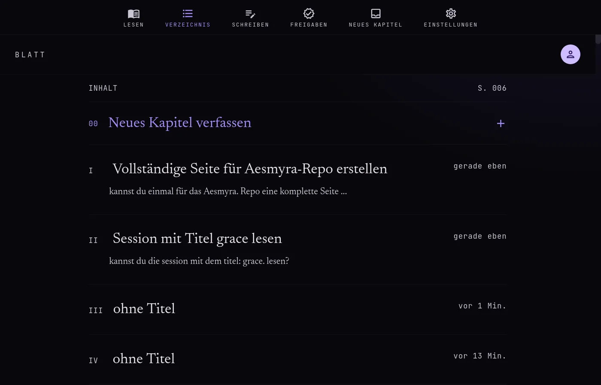
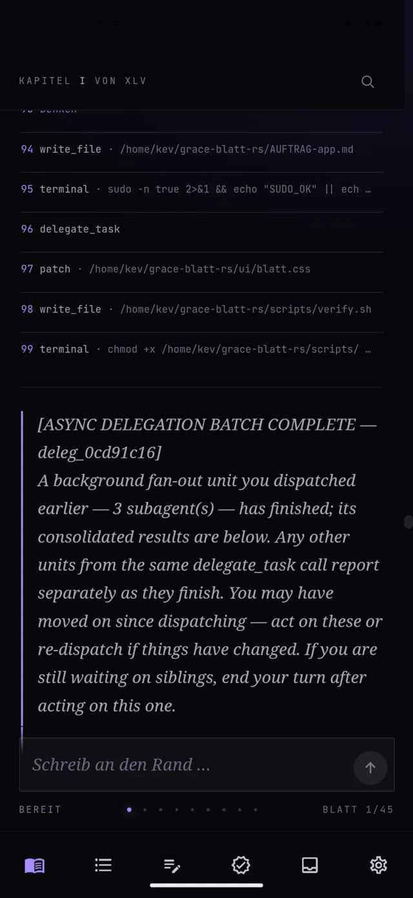
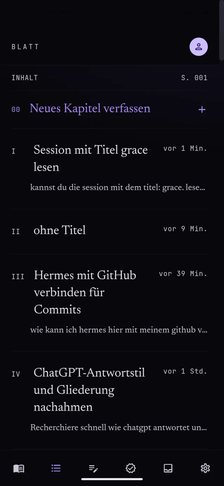
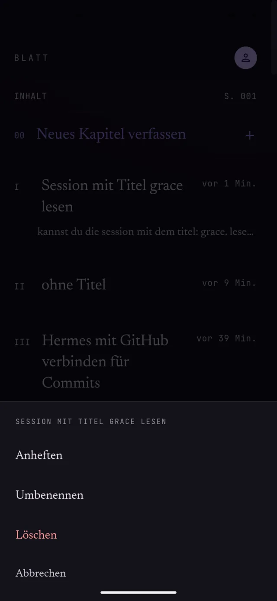
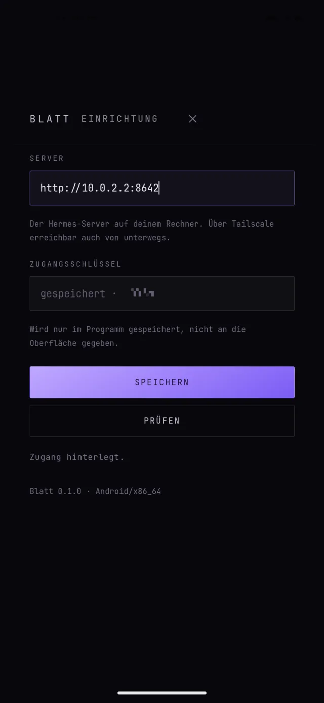

I
Kapitel mit Nummer und Seite
Jede Sitzung bekommt eine römische Ziffer, einen Titel, eine Vorschau und eine Seitenzahl. Angeheftete Kapitel bleiben oben; ein langer Druck oder Rechtsklick öffnet Anheften, Umbenennen, Löschen.
Hermes-Client · Windows · Linux · Android
Aesmyra zeigt Hermes-Sitzungen als Kapitel: römisch nummeriert, mit Randnotizen für Werkzeuge, Denknotizen und Freigaben. Klar zu lesen, leicht zu finden.

I · Warum
Ein Assistent, mit dem man wirklich arbeitet, hinterlässt Dutzende Sitzungen: halb fertig, über Tage verteilt, mit Werkzeugausgaben, die man irgendwann wieder braucht. In einer Liste aus Sprechblasen findet man davon nichts wieder.
Aesmyra behandelt eine Unterhaltung deshalb wie einen Text. Jede Sitzung wird ein Kapitel mit Nummer, Titel und Vorschau. Was am Rand passiert — Werkzeuge, Denknotizen, Rückfragen — bleibt am Rand. Der Verlauf wird wieder lesbar, ohne dass man ihn umbaut.
Ein Gespräch ist kein Strom aus Blasen. Es ist ein Text, den man wiederfinden möchte.Leitsatz
II · Was es anders macht
Jede Sitzung bekommt eine römische Ziffer, einen Titel, eine Vorschau und eine Seitenzahl. Angeheftete Kapitel bleiben oben; ein langer Druck oder Rechtsklick öffnet Anheften, Umbenennen, Löschen.
Werkzeugaufrufe stehen als schmale Zeile am Rand, aufklappbar bis zur vollständigen Ausgabe. Denknotizen erscheinen kursiv und abgesetzt — sichtbar, aber leise.
Fragt ein Werkzeug um Erlaubnis, steht die Frage im Kapitel selbst: einmal, diese Sitzung, immer oder ablehnen. Die Antwort geht an den laufenden Auftrag zurück.
III · Die Leseseite
Markdown, Fußnoten, Suche im Kapitel und die Scrollposition je Kapitel. Die Statuszeile sagt, was gerade passiert; der Text bleibt lesbar, auch wenn im Hintergrund ein Werkzeug läuft.

IV · Auf jedem Gerät
Ein Fenster, das von 360 Pixel bis 4K mitgeht. Dieselben Kapitel, dieselbe Typografie, dieselben Tastenkürzel — unter Windows, Linux und auf Android.
Seitlich wischen



V · Stand
Aesmyra ist in der Alpha. Es gibt keine Releases, keine Installer und keine Versionsnummer zum Herunterladen — dafür einen Stand, der sich jeden Tag bewegt. Wer jetzt schon hineinsehen will, findet ihn im Repository.
AlphaVersion 0.1.0 · in Arbeit